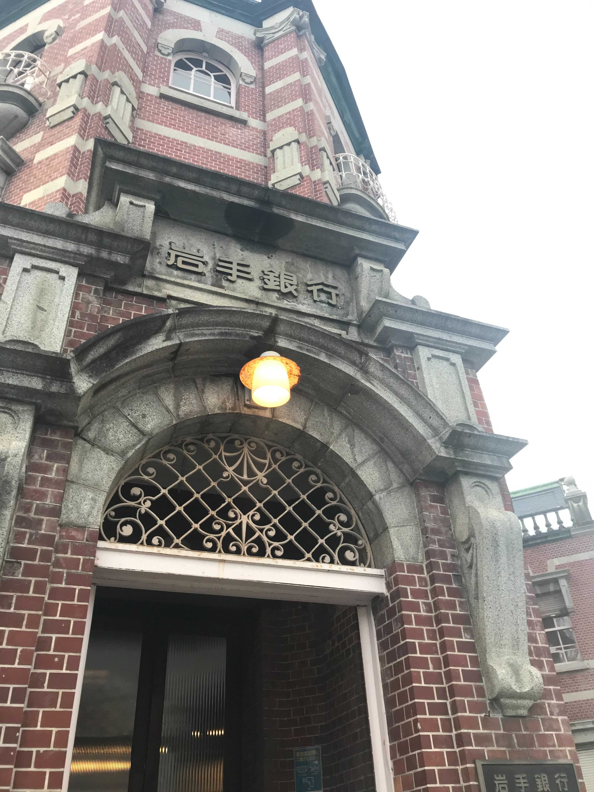
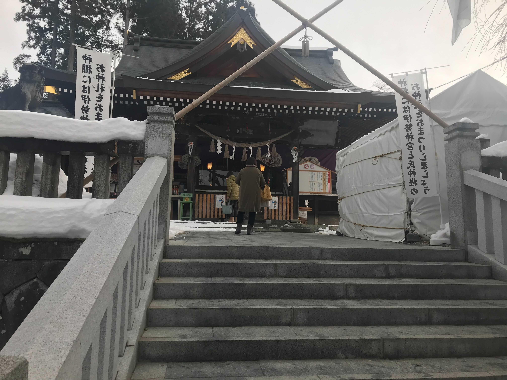
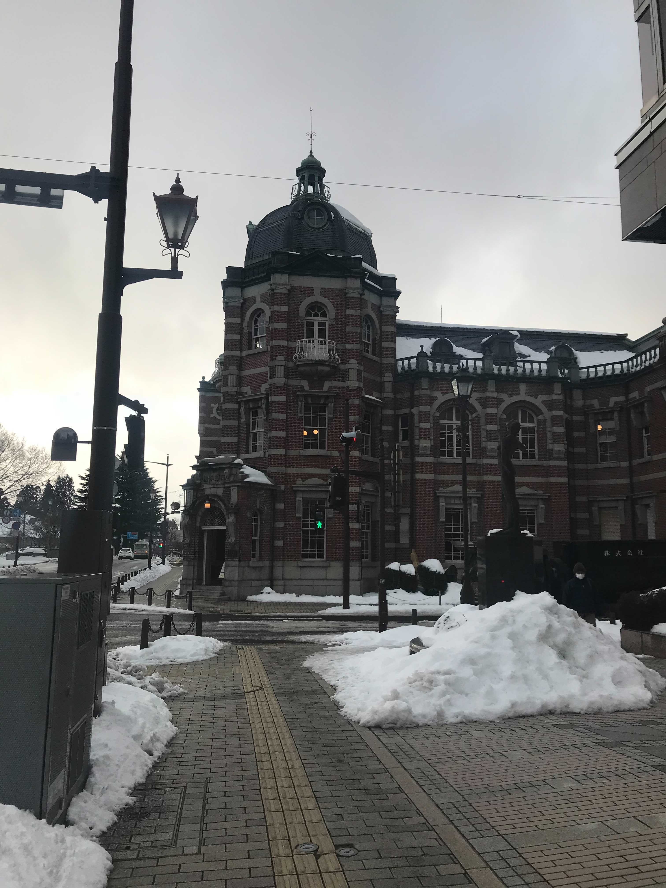

岩手銀行赤レンガ館



赤レンガ造りに緑のドームと、当時の洋風建築の姿がほぼ完全な姿で再現されています。
設計したのは、東京駅を設計したことでも知られている辰野金吾であり、その辰野金吾が 東北に唯一建築した作品です。
平成24年8月3日までは現役の銀行として営業しており、営業 終了後、現在は公開施設として生まれ変わっています。
設計したのは、東京駅を設計したことでも知られている辰野金吾であり、その辰野金吾が 東北に唯一建築した作品です。
平成24年8月3日までは現役の銀行として営業しており、営業 終了後、現在は公開施設として生まれ変わっています。
このサイトをシェアして欲しいな～!


?instagramの方はコピーしてください
施設情報
| 施設名 | 岩手銀行赤レンガ館 | |
|---|---|---|
| 見学時間 | 10:00~17:00(入館は16:30まで) 休館日：火 年末年始(12月29日～1月3日） | |
| 住所 | 〒020-0016 岩手県盛岡市中ノ橋通1丁目2番20号 | |
| 交通手段 | 岩手県盛岡市中ノ橋通１丁目２−２０ 盛岡駅からバスで「盛岡バスセンター」下車 徒歩すぐ | |
| 備考 | ||
類似スポット

名前
料金:￥500詳細
名前
料金:￥500詳細
名前
料金:￥500詳細